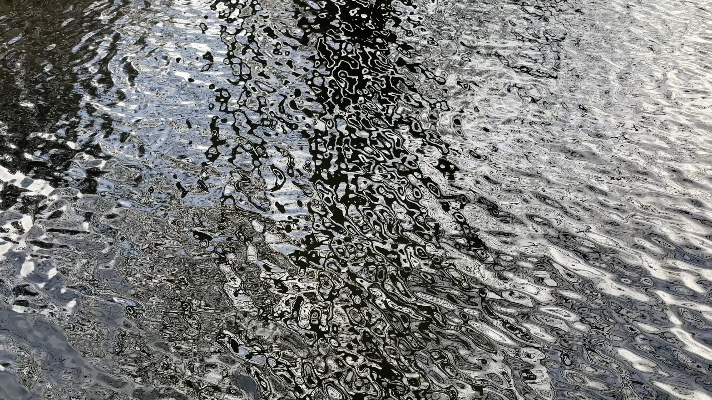

Here to Stay
2025—
You Are Here
2024

To Those Born After
2023

Falk Hobrecht is a filmmaker and artist based in Berlin. He studied documentary film at the University of Fine Arts Hamburg and the École des Beaux-Arts de Marseille.
His work examines how economic and political processes shape the landscapes we inhabit.
Direction / Cinematography / Research